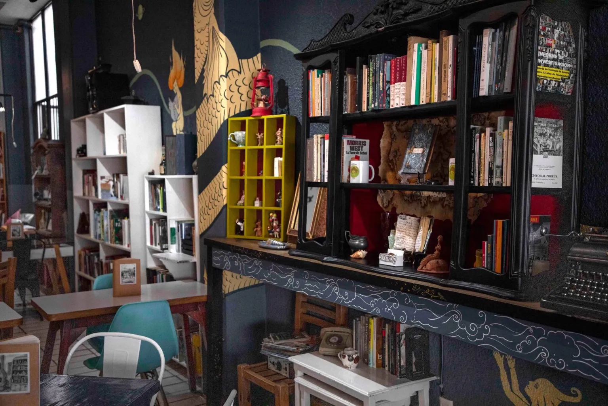
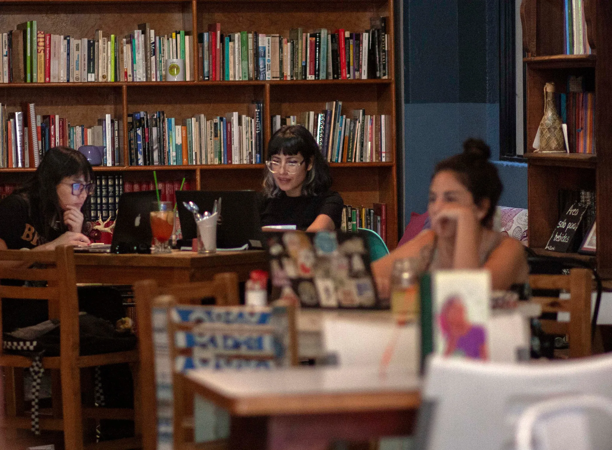
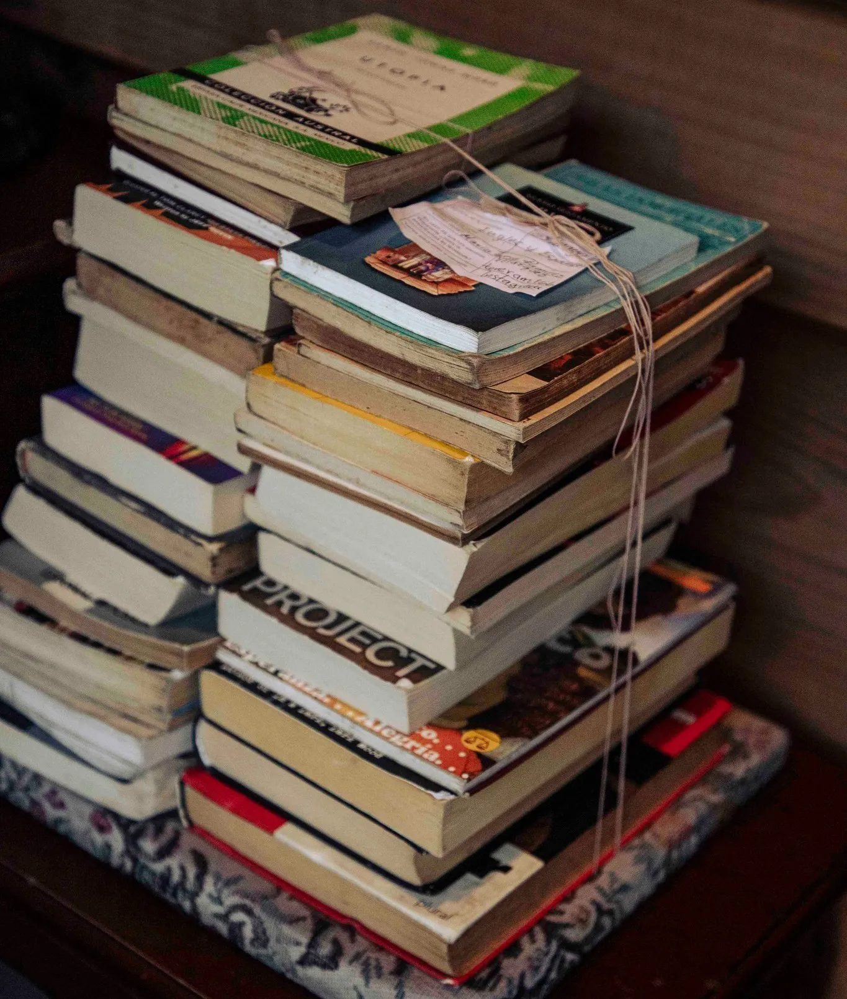
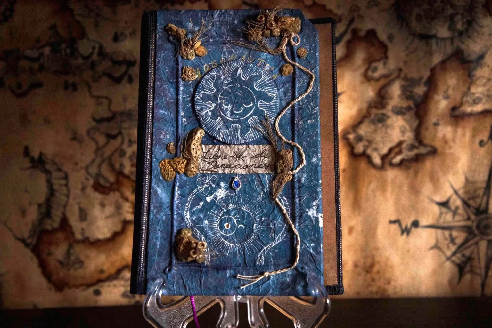
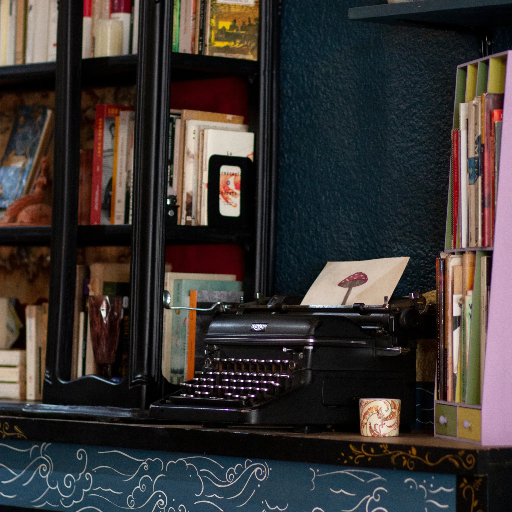
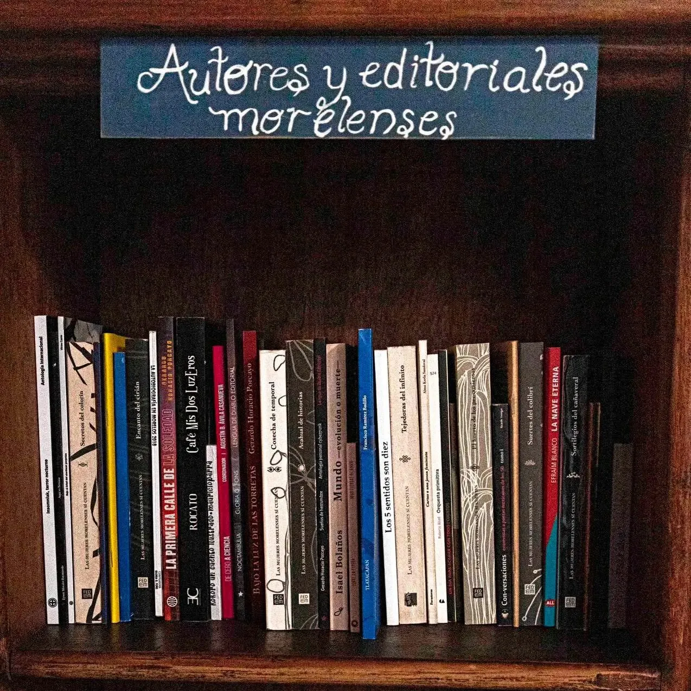
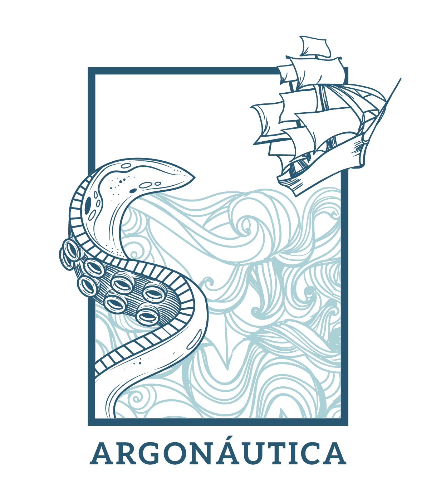
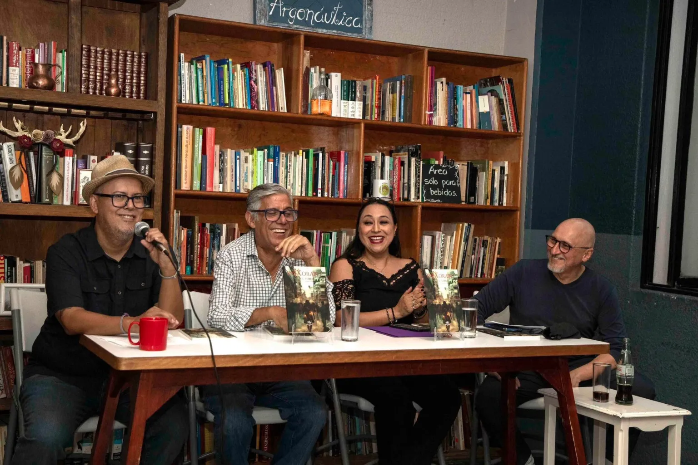
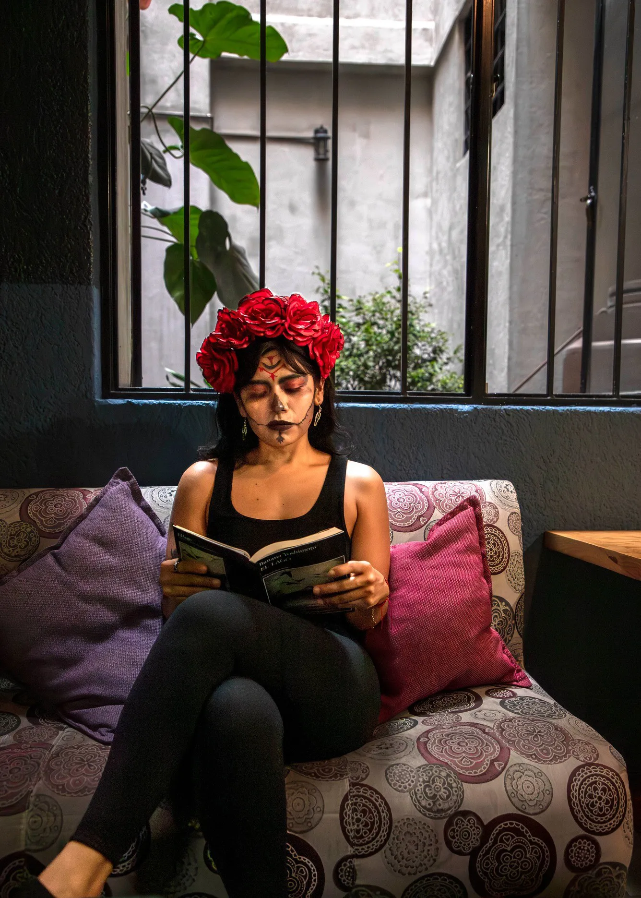

Conversaciones, café y buena compañía. Comida y bebidas para llevar o tomar en el lugar.

Estás en Argonáutica. La sala de lectura de Café La Fauna.
Un lugar hecho por lectores para lectores. Los libros que encuentres en Argonáutica son, en gran parte, donaciones hechas por lectores y escritores. Otro tanto son ejemplares que nos parece interesante añadir al acervo. Probablemente el libro que tomes, o veas que alguien lee, fue donado por algún amante de los libros.
Pareciera que los libreros y sus detalles son decoración, es innegable que los libros siempre dan un aura a los lugares en los que están, pero quien conoce el ambiente de las librerías y bibliotecas sabe que ahí pasa algo más, que no se trata solo de ambientación. No es exageración decir que son maestros, pues algunos abren el camino a otras formas de pensamiento, también nos dan algo a qué agarrarnos en malos tiempos e incontables emociones en historias memorables, son compañeros de viaje incondicionales. Así que entendemos la necesidad de un refugio para leer. Es cierto que hay muchos lugares para ello, pensamos que nunca sobra uno más.
Lo de “Sala de lectura” es un término que ya existía. Sabíamos que rondaba por ahí hasta que alguien nos comentó que era un programa, el Programa Nacional Salas de Lectura. Inició en 1995 y en 2025 cumple 30 años. Partidos políticos más, partidos políticos menos, el programa en sí tiene la intención de difundir la lectura, de poner al alcance de las comunidades libros gratuitos, una especie de microbibliotecas de barrio, atendidas por personas del mismo lugar. Así que fuimos, hicimos el programa de mediación de lectura y una vez concluido, nos otorgaron una caja llena de libros a cambio de ponerlos al alcance de los lectores. ¡Claro que sí! Lo mencionamos porque es parte de la historia de Argonáutica. Aunque hace años que no recibimos libros a través del programa, el primer acervo fueron cien libros del programa más algunos que aportamos de manera personal a ese primer librero de la sala. Luego se hizo difícil la continuidad. Por fortuna, los libros comenzaron a llegar en forma de donaciones, Argonáutica tenía vida propia. Conservamos lo de “Sala de lectura” porque además los primeros sillones fueron de la sala de una amiga que se cambió de casa. Su sala pasó de ser sala de casa, a sala de lectura.

Lo relacionado a los libros tiende a ser tranquilo, solo que no siempre. Igual que un río calmo en la superficie, las corrientes invisibles son impetuosas. En Argonáutica han nacido romances del silencioso juego de miradas entre lectores que un día se descubren observando qué lee el otro. También se han roto corazones, las parejas que antes venían a leer juntas vuelven en solitario de cuando en cuando, quién sabe si buscando encontrarse o esperando no hacerlo. Algunos de ellos donan los libros que leían juntos, los acogemos con cariño y sin demasiadas preguntas. Entendemos que se han hecho demasiado grandes para estar en casa y en Argonáutica encontrarán nuevos lectores que los leerán sin sospechar la historia de amor que guardan, hasta que una nota olvidada entre sus páginas devele que alguna vez, ese libro perteneció a dos personas que se querían.
Argonáutica también preserva cinco donaciones póstumas. Quienes leemos, en algún momento llegamos a la pregunta ¿Qué pasará con mis libros si ya no estoy? Algunas veces la familia que recibe los libros de un ser querido no tiene espacio y tiene que buscarles un lugar, otras veces los obsequian, o los venden. Quienes los donan lo hacen a manera de homenaje, dejan que las cosas que alguna vez fueron un tesoro para alguien, lo sigan siendo apra alguien más. La abuela de Dani era una gran lectora de novelas, cuando falleció, Dani conservó las más significativas y donó una parte a Argonáutica. Son novelas de otro tiempo, con colores desvaídos por los años, pero no por ello menos entretenidas o menos interesantes. Las buenas historias son atemporales. Dani, que por lo regular viene a desayunar, nos contó una mañana que su abuela era el tipo de persona que leía mucho y recomendaba con entusiasmo qué leer. En Argonáutica sus libros siguen haciendo lo mismo. Jorge, quien venía por las tardes, falleció sin aviso poco después de la pandemia. Solía visitar La Fauna con su esposa y conversar hasta el último minuto antes (y a veces después), del cierre. Se le notaba lo amable solo de mirarlo. La primera vez que vino olvidó su paraguas, era temporada de lluvias y salimos tras él pensando que podría necesitarlo, las nubes estaban tan oscuras que se podían ver aunque el sol ya se hubiera metido. Desde ese día se hizo más conversador y bromista. Cuando faltó, fue Julia, su esposa, quién donó una parte de su biblioteca diciendo que a él le habría gustado que sus libros estuvieran en la sala de lectura. Las bibliotecas encierran parte de nuestra personalidad y revelan parte de las cosas que nos intrigan o inquietan. A lo largo de su vida, Jorge nutrió su biblioteca con los temas que le interesaban. Él ya tenía algunos años visitando La Fauna y sabía que las personas realmente vienen a la sala de lectura, por una conversación con él fue que pusimos el mueblecito en el que los lectores colocan los libros que están leyendo, así no tienen que buscarlos cada que vengan, ya saben donde estarán la siguiente vez que vengan. La tercera es una donación de rescate. El amigo, ya mayor, de una buena amiga y habitual de Argonáutica, falleció por causas naturales. Su hijo conservó su casa pero no sabía qué hacer con los libros dentro de ella, eran de temas académicos, de música, uno que otro de arte y algunas novelas que es posible encontrar en los libreros para lectura y consulta. La cuarta es una donación pequeña pero no por ello menos valorada, cinco libros de temática fantástica, los favoritos de Patricia Garrido. Los trajo su hija luego del fallecimiento de Patricia para que otras personas pudieran encontrar la magia que esos cinco libros transmitían a su mamá. Se trata de algo de gran importancia para nosotros, es una de las razones por las que los libros de la sala no se venden ni se intercambian.

Una tarde recibimos la llamada de una chica a punto de mudarse. Cambiaría de ciudad por trabajo y por mucho que quisiera llegó a la conclusión de que no podría llevar sus libros a su nuevo hogar. Cuando fuimos a recogerlos encontramos que eran los únicos objetos que no estaban en cajas. Todo eran cajas de cartón amarradas con lazo y cinta canela y entre ellas, una pila de color por las portadas de los libros. Entre ellos había autores como Anne Rice, que leyó cuando era adolescente, junto con novelas más contemporáneas. Sus horizontes literarios se habían ampliado aunque dijo que seguía leyendo acerca de vampiros. Todos tenemos gustos literarios que conservamos por mucho tiempo. Nos da gusto cada que vuelve y reencuentra algún título de Anne Rice entre los libreros.
Las donaciones no vienen únicamente de circunstancias especiales. La mayoría son de otros lectores que conocen la sala y donan algunos libros que ya no necesitan o han comprado dos veces por descuido. Cosas de lectores. Una ocasión, en la que estábamos de vacaciones alguien trajo una bolsa con libros y al encontrar cerrado la dejó en la entrada. Cuando volvimos nos sorprendió ver que los libros estaban completos. Nos dio gusto, por supuesto, pero también puso de manifiesto que los libros no son precisamente algo que la gente quiera llevarse. Pensando con optimismo, digamos que quienes pasaron por ahí esos días y vieron la bolsa con libros simplemente decidieron no tomar algo que no era suyo. ¡Yei!

Muchas veces quienes vienen a donar libros prefieren mantenerse en el anonimato, optan porque no les mencionemos o etiquetemos en las redes. Sus razones tendrán. Aún así, consideramos que es importante dejar en algún sitio la contribución que han hecho. Por ello hicimos el “Libro de donaciones”, un libro en que quienes donan pueden escribir con su puño y letra algún mensaje para los lectores de la sala. Ahí quedan inscritos los nombres de quienes han tenido la generosidad de donar libros sin más ánimo que fomentar el amor por la lectura.
Cada que hagas una donación te pediremos también que llenes un papelito con algunos datos básicos, para etiquetarte si así lo deseas, en caso de que hagamos una publicación de la donación.

Hace referencia a “Las argonáuticas” de Apolonio de Rodas, un autor de hace muchísimo tiempo. Cuenta la historia de Jasón y los argonáutas. Una aventura fantástica, épica hasta la última letra, llena de peligros, seres mitológicos y encrucijadas con el destino. El nombre del barco en el que viajaban, “Argos”, junto con la palabra “nauta”, del griego “nautes” que significa “navegante” da origen a “Argonáutica”, una idea que refiere a las aventuras de los navegantes al explorar un mundo desconocido, lleno de riesgos, satisfacciones, maravillas y recompensas. También de amor, porque en la historia original el amor de Medea y Jasón es parte de lo que mueve la historia. El amor mueve todo. La argonáutica encierra el arte de navegar por la vida, de encontrar nuestra propia historia y al mismo tiempo, la posibilidad de descubrir la enseñanza de otros en los libros que hay en ella.
Bien pudo llamarse “Sala de libros faunos”, o algo por el estilo. Pero no. El nombre estaba elegido desde 1994, cuando ni siquiera existía un Café La Fauna. Ese año, un gran año para la música, salía al aire un programa de radio llamado “Argonáutica”, que, en palabras de Jordi Soler, su locutor, y director, estaba dirigido por las letras. La estación era Rock 101, una estación que programaba rock en español e inglés de bandas poco conocidas en México. Argonáutica se transmitía cada viernes en punto de las 12 de la noche, de ahí seguían dos horas de música y literatura, una mezcla comercialmente improbable, pero que con el toque adecuado de Jordi, escritor y lector incansable, abrió un espacio para mentes inquietas, dispuestas a escuchar algo que les revelara una idea a través de una canción o una línea literaria. Argonáutica reunió a miles, millones quizá, de personas que durante dos horas soñaban con la poesía o prosa que salía a través de las bocinas. La luz de la habitación de esos jóvenes, y no tan jóvenes, se mantenía encendida hasta las dos de la mañana mientras otros, escuchaban el programa manejando sin rumbo, cuando las calles de la ciudad se habían vaciado y el silencio nocturno dejaba que las ondas sonoras viajaran limpias a los oídos. En ese lapso Jordi tomaba alguna llamada, la voz de alguien que también escuchaba desde otro sitio, y entonces surgía una extraña certeza de que el mundo no es un lugar tan solitario.
Llamar así a la sala de lectura es un homenaje a un programa de radio que enganchó a muchas personas a la buena literatura, y a nuestro modo, tratamos de seguir con la labor de contagiar la literatura.
En la noche a las 12, con la penumbra, cuestas y nada que perder. Cuando las buenas costumbres se han ido a la cama, estás a nuestra merced.
Así decía la viñeta de presentación de Argonáutica en Rock 101. Después seguía alguna canción introductoria y la voz de Jordi alistándonos para lo que vendría esa noche.

Dentro del acervo tenemos una sección dedicada a autores y editoriales morelenses, la mayoría independientes, que ocupan un lugar en el mapa literario de la entidad. Muchos de ellos han presentado sus libros en Café La Fauna, cada que se puede compramos uno para adicionarlo a la sala, otras ocasiones, ellos donan un ejemplar con la misma generosidad que lo hacen los lectores. En esa sección hay de todo, poesía, ciencia ficción, novela contemporánea, cuentos, periodismo, fanzines, terror, cyberpunk, autobiografía, ensayo y hasta un estudio matemático. Por supuesto es solo una fracción de lo que se escribe en Morelos, de autores y editoriales con quienes hemos coincidido y está en permanente construcción.

Argonáutica tiene un logo en el que se ve un barco escapar volando de un tentáculo gigante surgiendo de un mar embravecido. El barco es el escape del peligro de la ignorancia a través de lo imposible, de aprender a volar mediante la imaginación y el conocimiento. También representa el mundo de fantasía al que es posible acceder mediante la literatura, el viaje épico de estar vivo y el gran aliado que es la literatura en ese viaje.
Argonáutica también alberga los círculos de lectura de La Fauna. Aunque ha habido varios hay tres a los que le tenemos especial cariño. El primer círculo de lectura de La Fauna nació en 2017, año en que se inauguró Argonáutica. Se reunió cada semana hasta que apareció la pandemia. En ese periodo sus integrantes migraron a la red y siguieron reuniéndose por videollamada. Pueden encontrarlo como “Círculo de lectura Argonáutas” en redes sociales. Entre algunos de los participantes asiduos de este primer círculo están Salvador Flores, lector incansable que a la fecha participa en el círculo actual, Luisa Briones, psicóloga, lectora y profesora que de cuando en cuando asiste también, José Luis Alarcón, Iván Salgado y Luis Valencia. Como dato adicional el círculo fue iniciado por el pintor Raúl Valdivia. Posteriormente albergamos con gusto el círculo de lectura femenino “Una habitación para nosotras”, iniciado por Yeni Rueda López, escritora y editora que a la fecha da vida al proyecto en otros espacios. Al momento de escribir estas líneas, en 2025, el círculo de lectura de La Fauna es moderado por Dante Gómez García, un joven estudiante de filosofía y letras que ha logrado cohesionar un nutrido grupo de lectores que se reúnen cada jueves a leer cuentos de diversos autores. El grupo, principalmente compuesto por personas de menos de treinta años, es una muestra de que los jóvenes leen y se interesan también en la nueva y vieja literatura entre patinetas, cigarrillos y cabello de colores.

Además de ser un espacio abierto para la lectura, Argonáutica es sede de presentaciones literarias en un ambiente en el que los autores y sus lectores pueden verse cara a cara, algo importante cuando aún no eres Stephen King, J. K. Rowling o Brandon Sanderson. El espacio es muy amigable con las editoriales independientes, principalmente por la vocación literaria, pero también en gran parte porque lo independiente necesita amigos, sitios en donde no haya costos adicionales por presentar un libro. Después de todo se trata de ayudar a que la escritura y lectura tengan un punto de encuentro.
Como puedes ver, en Argonáutica pasan muchas cosas, pero si vienes en un día cualquiera es tan tranquilo que parece que nunca pasa nada, y aún faltan algunas cosas.
De cuando en cuando aparecen libros de los que no tenemos registro de donación. Suponemos que alguien viene y los deja de manera voluntaria en los libreros. Si es así, gracias. Si no, tendremos que pensar en la generación literaria espontánea.
Cada que cerramos nos aseguramos de apagar las luces y desconectar todo por seguridad y porque el recibo de luz sale carísimo. De noche, y sin ninguna luz encendida, La Fauna es oscura, incluso si es de día se hace penumbra si no hay un foco prendido. Una de las lámparas está en uno de los libreros del fondo y resulta que nos han dicho quienes han venido cuando estamos cerrados que hemos olvidado apagar esa luz. Apagar las luces es de las cosas que jamás se nos pasan, además de que lo sabríamos al volver al otro día porque la encontraríamos encendida. ¿Lo peor del asunto? Que en una ocasión nos mostraron una foto con el celular en donde en efecto, se ve la luz encendida al fondo de la sala de lectura. Preferimos pensar que una variación en el voltaje la encendió. De broma quien nos la mostró dijo que tal vez alguien leía en la noche. Ummm… la mejor forma de verlo es que entonces la sala de lectura cumple su propósito hasta en circunstancias extrañas.
También está el misterio del sillón dormilón, justo en ese sillón es común que las personas se queden dormidas. Quizás es que se ve tan cómodo que más bien los dormilones lo buscan. En esencia es igual que cualquier otro sillón, así que decimos que ese sillón tiene poder relajante. Le llamamos el sillón de La Bella Durmiente.
Dicen por ahí que en Café La Fauna regalan café. Sí y no. En realidad es Argonáutica quien lo obsequia (y La Fauna quien lo paga), es su manera de decirle a los lectores que hay un sitio en donde pueden simplemente sentarse a disfrutar un rato leyendo. Puede ser un libro propio o uno de la sala de lectura. Es cierto que hay personas que hacen como que leen y piden su café lector (así le llamamos), pero por fortuna son los menos, la mayoría son personas que realmente disfrutan los libros y el café. El sábado lector existe desde que Argonáutica nació, esos ya son muchos sábados y muchos cafés lectores. No puede saberse el futuro, pero esperamos que dure mucho más tiempo.
Cada año, Argonáutica participa en la convocatoria hecha por Café La Fauna y Editorial Lengua de Diablo para que quienes gustan de escribir terror participen en un concurso de cuento de terror. Otorgamos un premio en efectivo y Lengua de Diablo, además, hace una edición digital con los mejores cuentos a consideración del jurado junto con el cuento ganador. ¡Mantente atento a la convocatoria!

Solemos tomar fotografías de personas leyendo. Lo imaginamos como las pinturas de otra época en donde aparecen personas haciendo algo tan sencillo como cocinar, caminar, conversar o leer. Con el tiempo se vuelven testimonios de una época, de un momento en el tiempo. Si de pronto alguien de nosotros se acerca a preguntarte si puede tomarte una foto leyendo es para eso, para capturar un momento de compañía entre quien lee y su libro y de paso, mostrar que hay personas leyendo en el mundo, que eso de que la gente no lee es una verdad parcial, lo que hace falta es contagiarnos unos a otros del amor por la lectura y los libros. Cada que un lector le muestra el camino de los libros a alguien más, le da un regalo maravilloso. Puedes ver algunas lectoras y lectores en acción en la página de Facebook e Instagram de Café La Fauna.
Argonáutica tiene libros disponibles para leerse de manera gratuita, sin condicionarlo a consumo y aunque tiene unos cientos de libros, cualquier lector habituado a las bibliotecas sabe que eso apenas reúne una muestra de los géneros literarios que existen, por ello aceptamos donaciones de manera permanente. Si tienes libros que ya no te hagan falta puedes hacer que lleguen a otros lectores donándolos a Argonáutica, una sala con espíritu de biblioteca. ¡Bonita forma de mostrarle a otras personas las cosas que nos gustan! No hay donación pequeña, pero si son muchos libros, podemos organizarnos para ir por ellos. Escríbenos a cafelafauna@gmail.com o mejor aún, visítanos y pregunta en la barra, estaremos felices de platicar contigo y ponernos de acuerdo para recoger o recibir los libros.
¡Luego de donar no olvides poner tu nombre en el libro de donaciones!
Donde haya un Café La Fauna, habrá una sala de lectura Argonáutica. ¡Explora sus libreros!